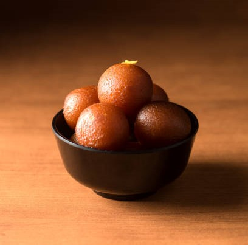
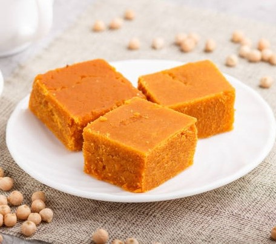

Gulam Jamun
Ingredients
- 1/2 cup Maida
- 1 cup grated Mawa (Khoya)
- 1/8 teaspoon Baking Soda
- Ghee
- Cardamom Powder
- 1½ cups Sugar
- 2½ cups Water
Process
- Boil 1 liter full cream buffalo milk in a heavy pan over low flame, stirring frequently until it thickens and all liquid evaporates (about 1½ hours). You should get around 1 cup of mawa.
- In a deep pan, dissolve 1½ cups sugar with 2½ cups water, 3-4 green cardamoms, and 8-10 saffron strands. Boil over high flame, then reduce to medium and cook for 10-12 minutes until slightly sticky. Heat syrup again before use.
- Mix 1 cup crumbled mawa with 1/8 teaspoon baking soda and ½ cup sifted maida to form a smooth dough. Divide into 16-18 smooth balls, and fry in medium-hot ghee or oil until golden brown (6-7 minutes). Soak fried balls in warm sugar syrup for 1-2 hours before serving.

Barfi
Ingredients
- 1/2 cup Maida
- 1 cup grated Mawa (Khoya)
- 1/8 teaspoon Baking Soda
- Ghee
- Cardamom Powder
- 1½ cups Sugar
- 2½ cups Water
Process
- Boil 1 liter full cream buffalo milk in a heavy pan over low flame, stirring frequently until it thickens and all liquid evaporates (about 1½ hours). You should get around 1 cup of mawa.
- In a deep pan, dissolve 1½ cups sugar with 2½ cups water, 3-4 green cardamoms, and 8-10 saffron strands. Boil over high flame, then reduce to medium and cook for 10-12 minutes until slightly sticky. Heat syrup again before use.
- Mix 1 cup crumbled mawa with 1/8 teaspoon baking soda and ½ cup sifted maida to form a smooth dough. Divide into 16-18 smooth balls, and fry in medium-hot ghee or oil until golden brown (6-7 minutes). Soak fried balls in warm sugar syrup.
